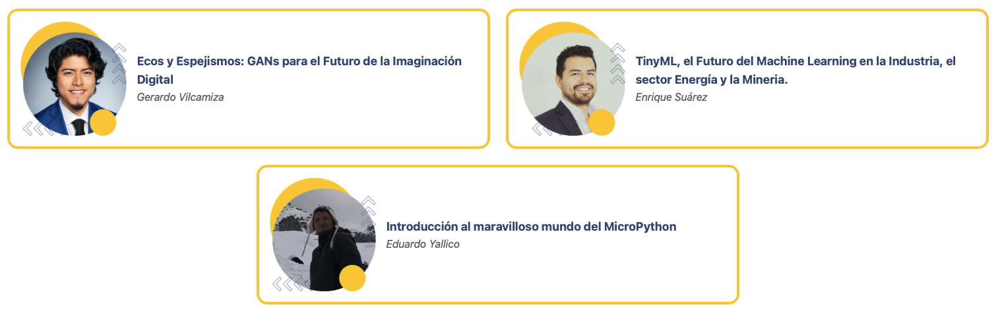

Eventos¶
¡Segundo Meetup del 2025! publicado el lunes, agosto 04, 2025
¡Regresa el meetup mensual de la comunidad Python Perú! Este jueves 7 de agosto tendremos una noche cargada de contenido, buenas prácticas, herramientas modernas y mucha comunidad. Tres charlas con enfoque práctico sobre desarrollo en Python, observabilidad, testing, arquitecturas limpias y herramientas en la nube. El evento es gratuito y abierto al público, pensado tanto para quienes están iniciando como para quienes ya tienen experiencia.
¡Primer Meetup del 2025! publicado el viernes, enero 24, 2025
Comencemos el 2025 con energ√≠a! √önete al primer meetup del a√±o de la comunidad Python Perú, un espacio para compartir ideas, aprender de charlas inspiradoras y conectar con otros apasionados por Python. Este evento está dise√±ado para todos, desde principiantes hasta expertos, con el objetivo de planificar juntos las actividades del a√±o, fortalecer nuestra comunidad y so√±ar con un futuro PyCon en Perú. üåü
El Último Byte: Encuentro de Fin de Año publicado el martes, diciembre 10, 2024

Únete al evento de cierre de año de la comunidad Python Perú, donde compartiremos conocimiento y construiremos juntos el camino para un 2025 lleno de aprendizaje y colaboración.
Primer Meetup Presencial 2024 publicado el lunes, junio 10, 2024
¡Te esperamos para una noche llena de aprendizaje, networking y crecimiento profesional en el Meetup Python Perú!
Segundo Meetup de Python Perú publicado el sábado, octubre 21, 2023

Descubre las aplicaciones de Python en Interligencia artificial y Programación de Hardware.